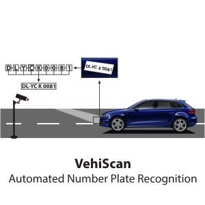

About Myself
Vitthal Alsatwar
My Resume
Career Objectivews
Hard-working professional with proven knowledge of programming and troubleshooting. A perfect balance of time management, multitasking, project planning, and organization abilities. Aiming to leverage my skills to become a successful name in the IT industry to make it more useful and beneficial to mankind.
An enthusiastic fresher with self-motivation currently pursuing Bachelor in technology in information technology. Eager to learn new technology and methodologies. Excellent teamwork, interpersonal and communication skills. Looking to start a career as entry level professional with a reputed IT industry.
Implemented responsive designs using HTML, CSS, and JavaScript, resulting in a 40% decrease in bounce rate and a 25% increase in average session duration, leading to improved user engagement and conversion rates.Researched and implemented cutting-edge technologies, staying ahead of industry trends; integrated AI chatbot which reduced customer support issues by 50% and improved response time by 75%.
Education
BACHELOR OF TECHNOLOGY (B.TECH)-IT-(2021-24)
(MGM’s College of Engineering, Nanded)
12th HIGHER SECONDARY CERTIFICATE(HSC)-(2020)
(Maharashtra State Board of secondary and higher Education)
10th (Secondary Examination)
(Maharashtra State Board of secondary and higher Education)
skills
JAVA, HTML, CSS, C , Web designing ,Bootstrap,JavaScript
Aditional Skills
Video editing, designing, Photography, Social Media Management,Microsoft Tools
Aditional Info
Projects

(Engineering. Mini Project, 5th Semester)
Survey Form on Mentel Health
In this project I perform the survey form in which we can check the mental health of the any one, basically is for the student who are suffering form the mental issues and that don’t know. In this project we use the basic concept of web development and we perform the project as we use the HTML, CSS, Bootstrap, MySql and Php.
Work on Arduino
In which we perform the projects or the use of the Arduino kit we perform some basic project.

In this project we learn new things while doing the project. We develop the project that detection of the number on the number plate. So use the Python language for that project and use some libraries as numpy, OCR ands so on.
Received awards or recognition for outstanding contributions to the successful implementation of ANPR projects.